R setup
library(tidyverse)
library(gt)
library(patchwork)
library(tidymodels)
library(tictoc)
library(dunnr)
extrafont::loadfonts(device = "win", quiet = TRUE)
theme_set(theme_td())
set_geom_fonts()
set_palette()Part 2 of predicting bike ridership in Halifax, Nova Scotia. In this post, I explore and tune different modeling approaches.
Taylor Dunn ![]()
April 29, 2022
In my last post, I retrieved, explored, and prepared bike counter data from Halifax, Nova Scotia. I also got some historical weather data to go along with it. Here, I will further explore the data, engineer some features, and fit and evaluate many models to predict bike ridership at different sites around the city.
Import the data:
Rows: 2,840
Columns: 9
$ site_name <chr> "Dartmouth Harbourfront Greenway", "Dartmouth Harb…
$ installation_date <date> 2021-07-08, 2021-07-08, 2021-07-08, 2021-07-08, 2…
$ count_date <date> 2021-07-08, 2021-07-09, 2021-07-10, 2021-07-11, 2…
$ n_records <int> 48, 48, 48, 48, 48, 48, 48, 48, 48, 48, 48, 48, 48…
$ n_bikes <int> 130, 54, 180, 245, 208, 250, 182, 106, 152, 257, 1…
$ mean_temperature <dbl> 18.2, 17.6, 21.0, 21.0, 20.6, 18.6, 17.7, 20.2, 20…
$ total_precipitation <dbl> 0.6, 10.0, 0.4, 0.0, 0.0, 0.0, 0.0, 11.6, 0.2, 0.4…
$ speed_max_gust <int> NA, 54, 56, NA, NA, NA, NA, 32, 37, NA, NA, NA, NA…
$ snow_on_ground <int> NA, NA, NA, NA, NA, NA, NA, NA, NA, NA, NA, NA, NA…This data consists of daily bike counts (n_bikes) over a 24 hour period (count_date) recorded at 5 sites (site_name) around the city. In the original data, counts are recorded every hour which is reflected by the n_records variable:
| site_name | n_records | n |
|---|---|---|
| Dartmouth Harbourfront Greenway | 8 | 1 |
| Dartmouth Harbourfront Greenway | 48 | 291 |
| Hollis St | 4 | 1 |
| Hollis St | 24 | 656 |
| South Park St | 8 | 1 |
| South Park St | 48 | 884 |
| Vernon St | 8 | 1 |
| Vernon St | 48 | 502 |
| Windsor St | 8 | 1 |
| Windsor St | 48 | 502 |
All except the Hollis St site have two channels (northbound and southbound), which is why n_records = 48. The entries with fewer n_records reflect the time of day that the data was extracted:
| site_name | count_date | n_records |
|---|---|---|
| Dartmouth Harbourfront Greenway | 2022-04-25 | 8 |
| Hollis St | 2022-04-25 | 4 |
| South Park St | 2022-04-25 | 8 |
| Vernon St | 2022-04-25 | 8 |
| Windsor St | 2022-04-25 | 8 |
For this analysis, I will exclude this incomplete day:
The date ranges for each site:
bike_ridership %>%
group_by(site_name) %>%
summarise(
min_date = min(count_date), max_date = max(count_date),
n_days = n(), .groups = "drop"
) %>%
mutate(
site_name = fct_reorder(site_name, min_date),
n_days_label = ifelse(site_name == levels(site_name)[1],
str_c("n_days = ", n_days), n_days),
midpoint_date = min_date + n_days / 2
) %>%
ggplot(aes(y = site_name, color = site_name)) +
geom_linerange(aes(xmin = min_date, xmax = max_date)) +
geom_point(aes(x = min_date)) +
geom_point(aes(x = max_date)) +
geom_text(aes(label = n_days_label, x = midpoint_date), vjust = -0.5) +
scale_y_discrete(labels = ~ str_wrap(., width = 15)) +
labs(y = NULL, x = "min_date -> max_date") +
theme(legend.position = "none")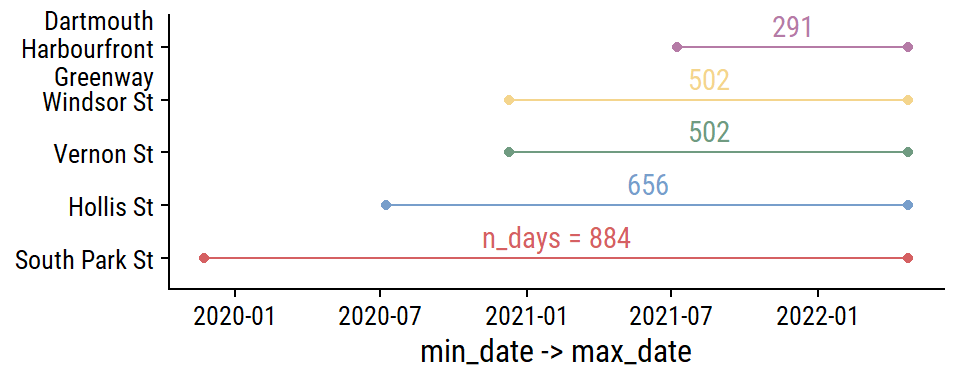
Before any more EDA, I’ll split the data into training and testing sets (and only look at the training data going forward). For time series data, there is the rsample::initial_time_split() function, which I’ll use to make a 70-30 split:
# Need to order by time to properly use time split
bike_ridership <- bike_ridership %>% arrange(count_date, site_name)
bike_split <- initial_time_split(bike_ridership, prop = 0.7)
bike_train <- training(bike_split)
bike_test <- testing(bike_split)
bind_rows(
train = bike_train, test = bike_test, .id = "data_set"
) %>%
group_by(data_set, site_name) %>%
summarise(
min_date = min(count_date), max_date = max(count_date),
n_days = n(), midpoint_date = min_date + n_days / 2,
.groups = "drop"
) %>%
ggplot(aes(y = fct_reorder(site_name, min_date), color = data_set)) +
geom_linerange(aes(xmin = min_date, xmax = max_date),
position = position_dodge(0.2)) +
geom_point(aes(x = min_date), position = position_dodge(0.2)) +
geom_point(aes(x = max_date), position = position_dodge(0.2)) +
geom_text(aes(label = n_days, x = midpoint_date), vjust = -0.5,
position = position_dodge(0.2), show.legend = FALSE) +
labs(x = "date range", y = NULL, color = NULL)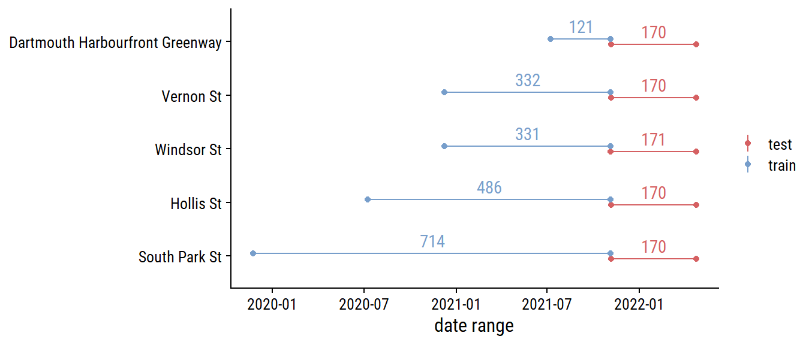
It might make more sense to stratify by site_name so that there is a 70-30 split in each site.1 For now, I’m using a simpler approach to split into the first 70% and 30% of the data.
For each site, the distribution of daily n_bikes:
bike_train %>%
ggplot(aes(x = n_bikes, fill = site_name)) +
geom_histogram(bins = 30) +
facet_wrap(~ str_trunc(site_name, 25)) +
theme(legend.position = "none")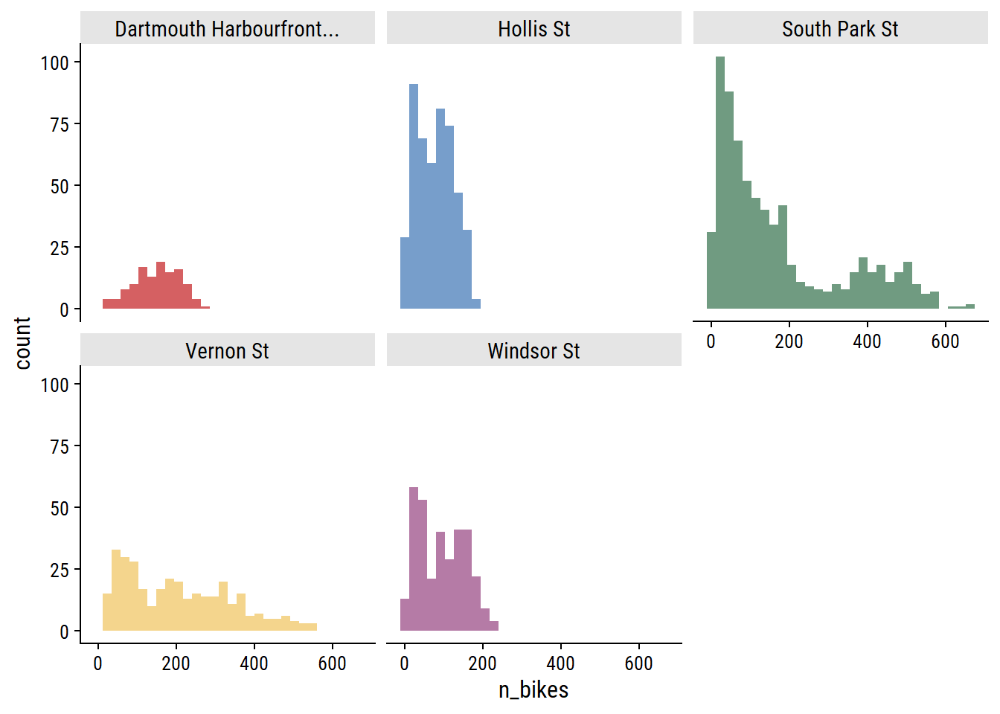
The South Park St site appears bimodal, which I noted in part 1 was likely due to the addition of protected bike lanes in 2021. This can be seen more clearly in the trend over time:
bike_train %>%
ggplot(aes(x = count_date, y = n_bikes, color = site_name)) +
geom_line() +
facet_wrap(~ site_name, ncol = 1) +
theme(legend.position = "none")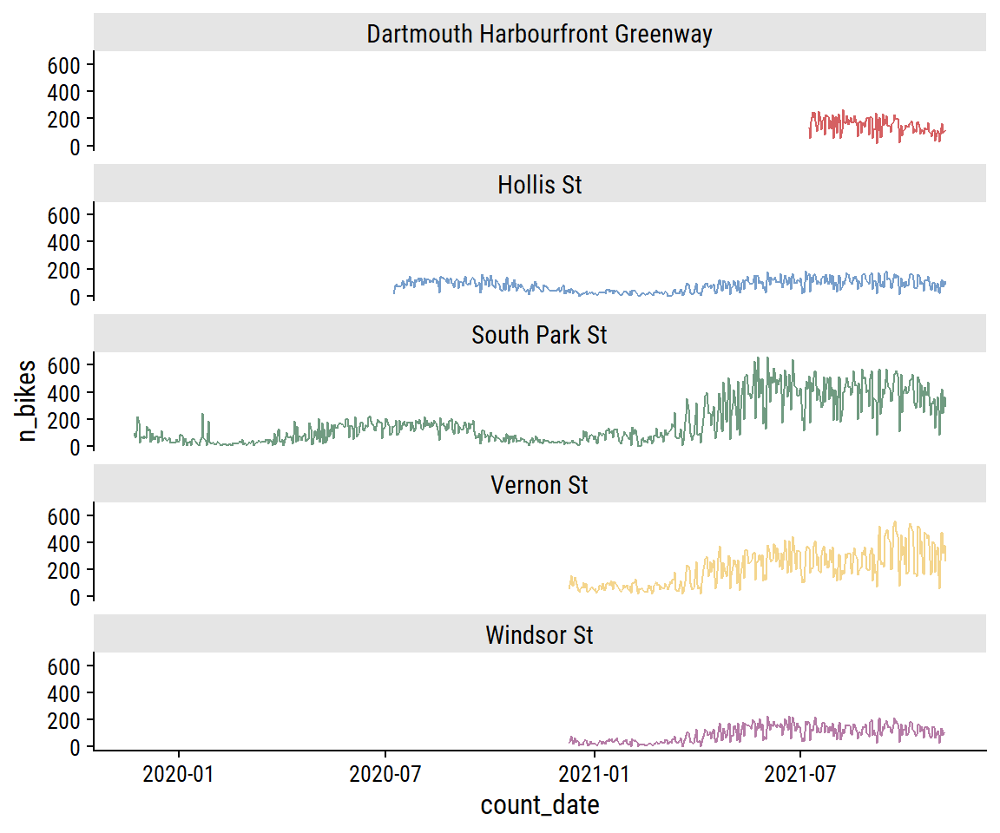
As you would expect for data in the same city, bike counters between sites are very highly correlated, which I can visualize:
bike_train %>%
transmute(count_date, n_bikes1 = n_bikes,
site_name1 = factor(str_trunc(site_name, 10))) %>%
left_join(., rename(., n_bikes2 = n_bikes1, site_name2 = site_name1),
by = "count_date") %>%
filter(as.numeric(site_name1) < as.numeric(site_name2)) %>%
ggplot(aes(x = n_bikes1, y = n_bikes2)) +
geom_point(aes(color = site_name1), alpha = 0.3) +
facet_grid(site_name2 ~ site_name1) +
theme(legend.position = "none") +
dunnr::add_facet_borders()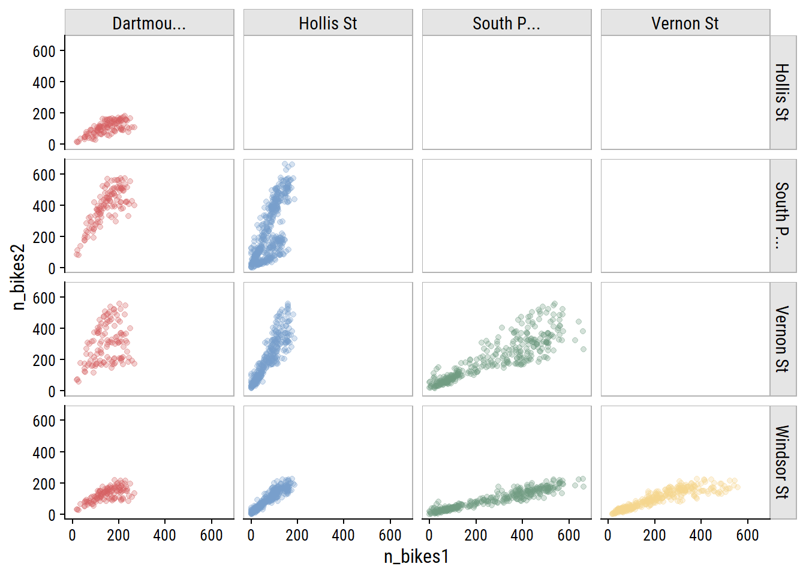
The day of the week effect looks important:
bike_train %>%
mutate(day_of_week = lubridate::wday(count_date, label = TRUE)) %>%
ggplot(aes(x = day_of_week, y = n_bikes)) +
geom_jitter(aes(color = site_name), height = 0, width = 0.2, alpha = 0.3) +
stat_summary(fun = "mean", geom = "point") +
facet_wrap(~ str_trunc(site_name, 30)) +
theme(legend.position = "none") +
dunnr::add_facet_borders()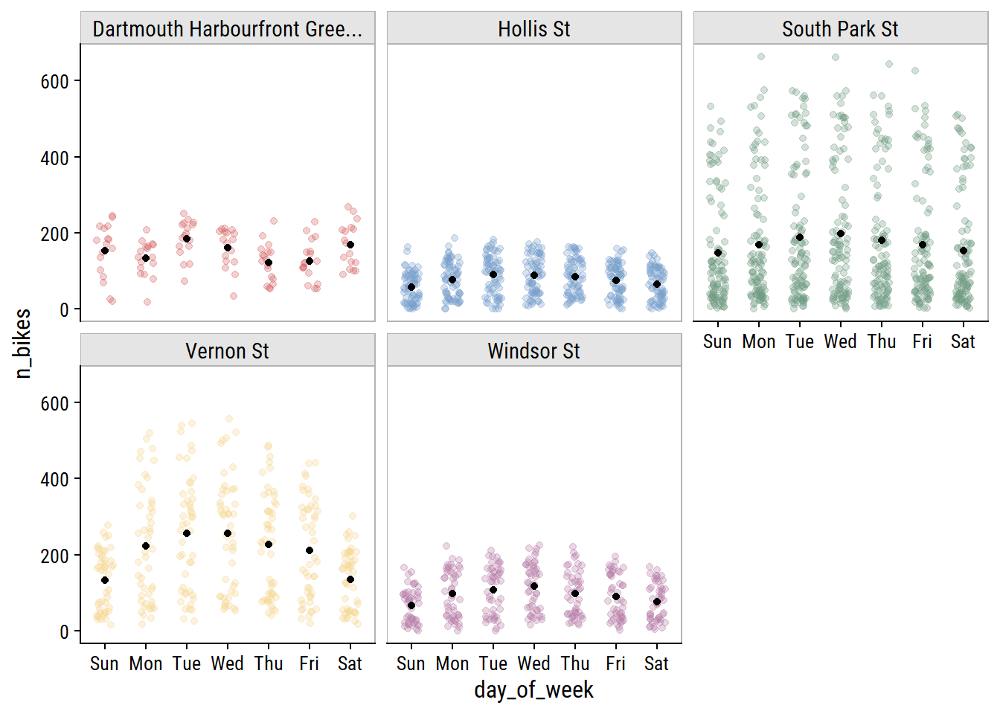
Another thing to consider is holidays. I can get Canadian holidays with the timeDate package (this is how recipes::step_holiday() works):
library(timeDate)
canada_holidays <-
timeDate::listHolidays(
pattern = "^CA|^Christmas|^NewYears|Easter[Sun|Mon]|^GoodFriday|^CaRem"
)
canada_holidays [1] "CACanadaDay" "CACivicProvincialHoliday"
[3] "CALabourDay" "CaRemembranceDay"
[5] "CAThanksgivingDay" "CAVictoriaDay"
[7] "ChristmasDay" "ChristmasEve"
[9] "EasterMonday" "EasterSunday"
[11] "GoodFriday" "NewYearsDay" Then get the dates for each across the years in the bike data:
canada_holiday_dates <- tibble(holiday = canada_holidays) %>%
crossing(year = 2019:2022) %>%
mutate(
holiday_date = map2(
year, holiday,
~ as.Date(timeDate::holiday(.x, .y)@Data)
)
) %>%
unnest(holiday_date)
canada_holiday_dates %>%
select(holiday, holiday_date) %>%
rmarkdown::paged_table()Only day I can think is missing from this list is Family Day (Heritage Day in Nova Scotia) which is the third Monday in February. Visualize the effect of these holidays on bike ridership by plotting n_bikes in a 2 week window around the holidays (showing just the South Park St site for this plot):
canada_holiday_dates %>%
filter(holiday_date %in% unique(bike_train$count_date)) %>%
mutate(
date_window = map(holiday_date, ~ seq.Date(.x - 7, .x + 7, by = "1 day"))
) %>%
unnest(date_window) %>%
left_join(
bike_train, by = c("date_window" = "count_date")
) %>%
mutate(is_holiday = holiday_date == date_window) %>%
group_by(holiday) %>%
mutate(day_from_holiday = as.numeric(holiday_date - date_window)) %>%
ungroup() %>%
filter(site_name == "South Park St") %>%
ggplot(aes(x = day_from_holiday, y = n_bikes,
group = factor(year))) +
geom_line() +
geom_vline(xintercept = 0, lty = 2) +
geom_point(aes(color = factor(year))) +
facet_wrap(~ holiday) +
labs(color = "year") +
dunnr::add_facet_borders() +
theme(legend.position = "top")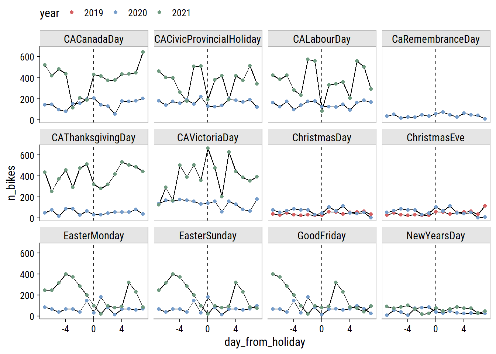
The only holidays with a clear drop in ridership are Labour Day and the Civic Holiday (called Natal Day in NS) in 2021. Victoria Day seems to have the opposite effect. The Good Friday, Easter Sunday and Easter Monday holidays are obviously overlapping, and the n_bikes trend is a bit of a mess, but I can see an indication to the left of Good Friday that there may be a drop in ridership going into that weekend.
One thing to note is that the first, middle and last points correspond to the same day of the week, and the middle point in this set is usually lower than those two point, so holidays may be useful features in conjunction with day of the week.
The weather variables have varying levels of completeness:
# Separate out the weather data
weather_data <- bike_train %>%
distinct(count_date, mean_temperature, total_precipitation,
speed_max_gust, snow_on_ground)
weather_data %>%
mutate(across(where(is.numeric), is.na)) %>%
pivot_longer(cols = -count_date) %>%
ggplot(aes(x = count_date, y = name)) +
geom_tile(aes(fill = value)) +
labs(y = NULL, x = NULL, fill = "Missing") +
scale_fill_manual(values = c(td_colors$nice$indigo_blue, "gray80")) +
scale_x_date(expand = c(0, 0)) +
scale_y_discrete(expand = c(0, 0)) +
theme(legend.position = "top")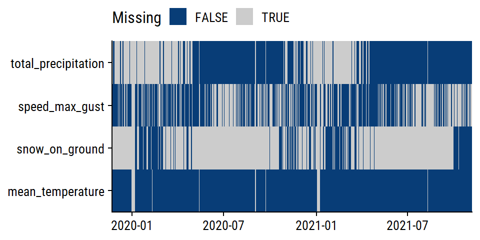
The distributions:
weather_data %>%
pivot_longer(cols = -count_date) %>%
filter(!is.na(value)) %>%
ggplot(aes(x = value, fill = name)) +
geom_histogram(bins = 20) +
scale_y_continuous(expand = c(0, 0)) +
facet_wrap(~ name, nrow = 1, scales = "free") +
theme(legend.position = "none")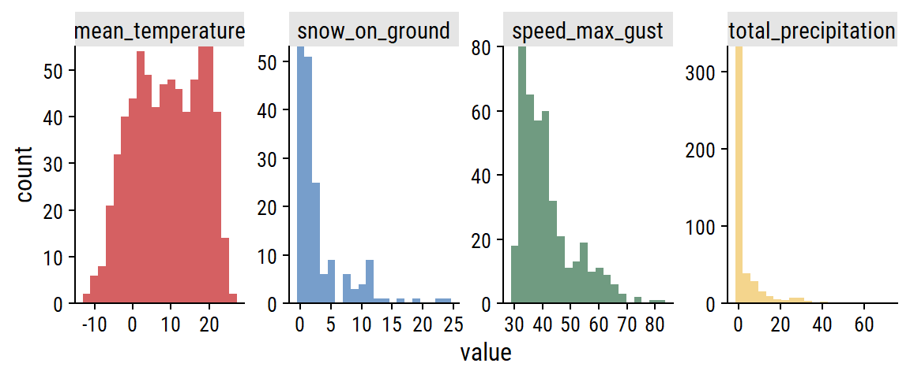
For non-missing cases, plot the pairwise relationships:
weather_data %>%
pivot_longer(cols = -count_date, names_to = "var1", values_to = "val1") %>%
mutate(var1 = factor(var1)) %>%
left_join(., rename(., var2 = var1, val2 = val1),
by = "count_date") %>%
filter(!is.na(val1), !is.na(val2),
# Use numeric factor labels to remove duplicates
as.numeric(var1) < as.numeric(var2)) %>%
ggplot(aes(x = val1, y = val2, color = var1)) +
geom_point(alpha = 0.5) +
facet_grid(var2 ~ var1, scales = "free") +
theme(legend.position = "none") +
dunnr::add_facet_borders()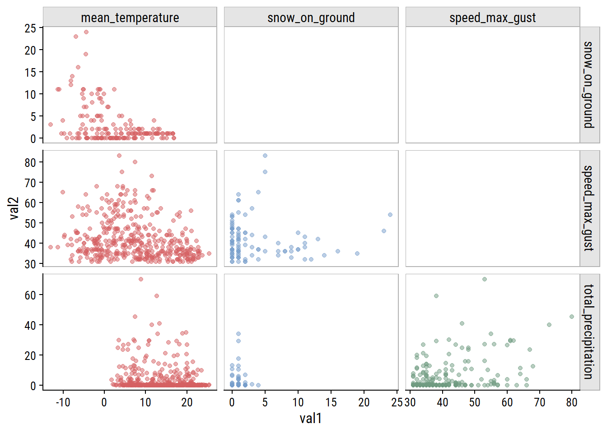
The clearest relationship to me is unsurprising: increasing mean_temperature is associated with decreasing snow_on_ground (top left plot).
Visualize relationships with n_bikes:
bike_train %>%
pivot_longer(
cols = c(mean_temperature, total_precipitation,
speed_max_gust, snow_on_ground),
names_to = "var", values_to = "val"
) %>%
filter(!is.na(val)) %>%
ggplot(aes(x = val, y = n_bikes)) +
geom_point(aes(color = str_trunc(site_name, 15)), alpha = 0.4) +
facet_wrap(~ var, nrow = 2, scales = "free_x") +
dunnr::add_facet_borders() +
labs(x = NULL, color = NULL) +
theme(legend.position = "bottom")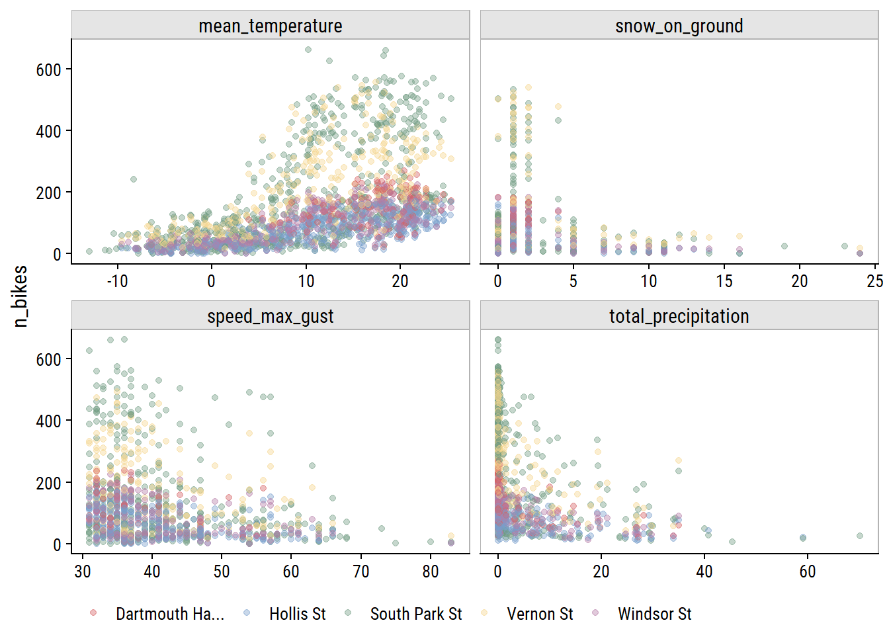
All of the weather variables seem to be have a relationship with n_bikes. In terms of predictive value, mean_temperature looks like it might be the most useful, and speed_max_gust the least.
From my EDA, I decided I want try including all 4 weather variables to predict bike ridership. This will require imputation of missing values for all 4, which I’ll attempt here.
Add some more time variables for working with the weather_data:
The mean_temperature variable is missing 3% of values. Visualize the trend over time:
p1 <- weather_data %>%
filter(!is.na(mean_temperature)) %>%
ggplot(aes(x = count_date, y = mean_temperature)) +
geom_line(aes(color = factor(count_year))) +
scale_color_viridis_d("year") +
scale_x_date("date", date_breaks = "1 year")
p2 <- weather_data %>%
filter(!is.na(mean_temperature)) %>%
ggplot(aes(x = count_yday, y = mean_temperature)) +
geom_line(aes(color = factor(count_year))) +
scale_color_viridis_d("year") +
scale_x_continuous("day of year", breaks = c(0, 90, 180, 270, 365)) +
labs(y = NULL)
p1 + p2 +
plot_layout(guides = "collect") &
theme(legend.position = "top")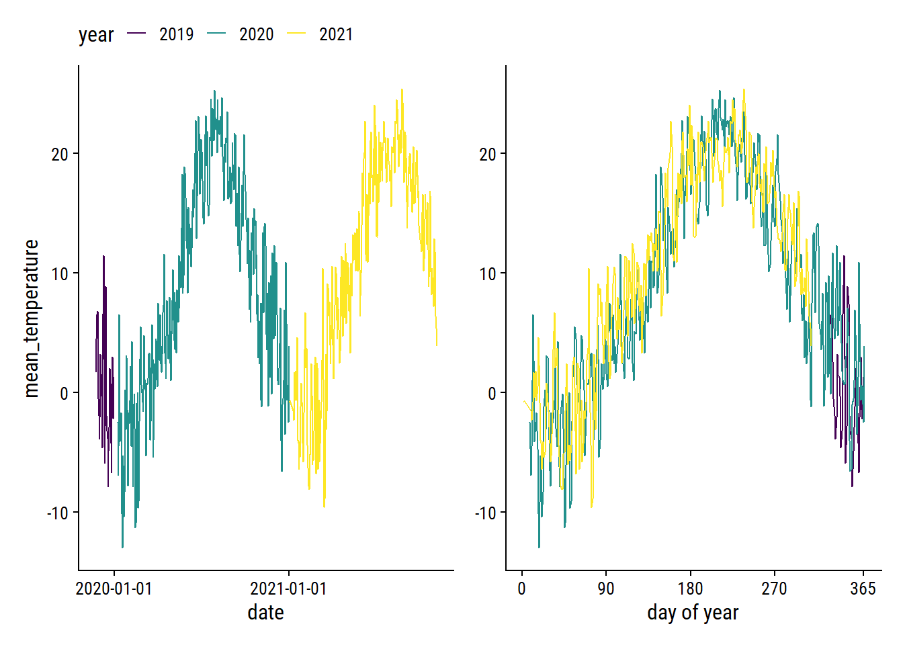
The cyclic nature makes it a good candidate for smoothing splines. As a starting point, try a natural spline with 5 knots on the count_yday variable:
library(splines)
lm_temperature <-
lm(mean_temperature ~ ns(count_yday, knots = 5),
data = filter(weather_data, !is.na(mean_temperature)))
p1 +
geom_line(
data = augment(lm_temperature, newdata = weather_data),
aes(y = .fitted), size = 1
) +
theme(legend.position = "top")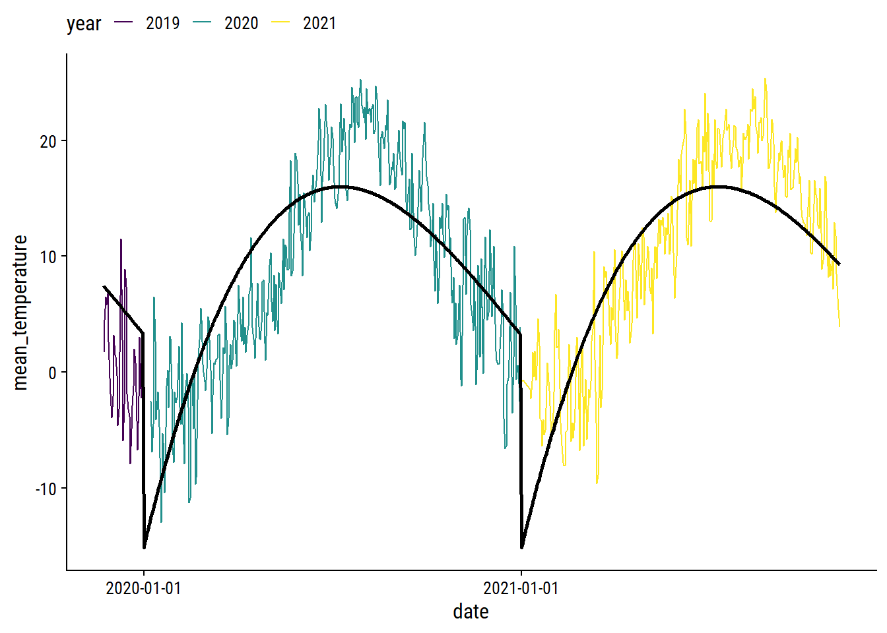
We can obviously do a lot better, especially at the yearly boundaries. I’ll fit the data using a generalized additive model (GAM) with the mgcv package.2 For the count_yday variable (ranges from 1-365), I’ll make sure that there is no discontinuity between year by using a cyclic spline (bs = "cc"). I’ll also include a smoothing term of count_day which will capture the trend across years.
library(mgcv)
gam_temperature <-
gam(mean_temperature ~ s(count_yday, bs = "cc", k = 12) + s(count_day),
data = filter(weather_data, !is.na(mean_temperature)))
plot(gam_temperature, pages = 1, shade = TRUE)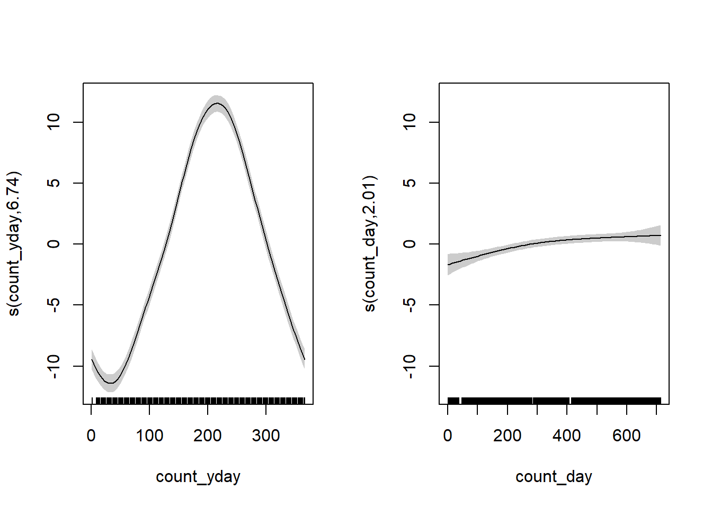
The left plot shows the seasonal trend within a year (note the lines would connect at count_yday = 1 and 365), and the right plot shows the increase in average temperature throughout time (across years) after accounting for the seasonal effect. Overlay the fit:
p1 +
geom_line(
data = augment(gam_temperature, newdata = weather_data),
aes(y = .fitted), size = 1
) +
theme(legend.position = "top")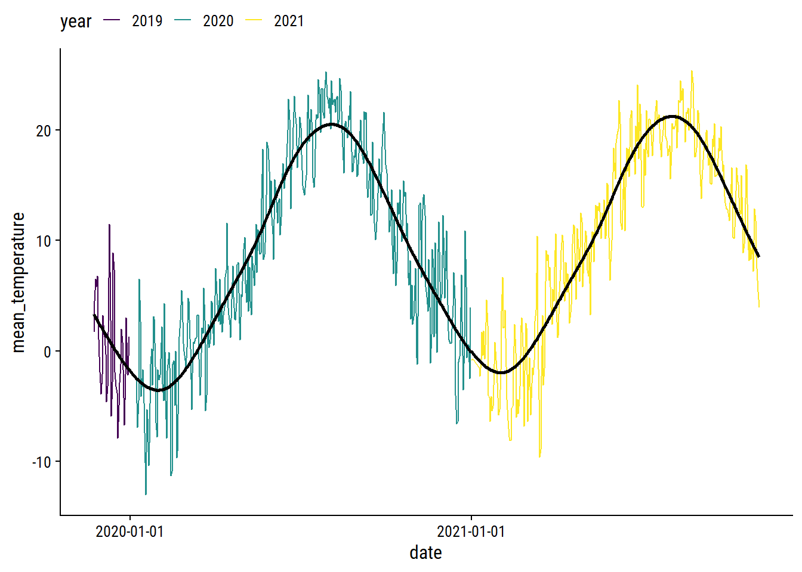
I’m pretty happy with that. I’ll use predictions from this GAM to impute missing daily temperatures.
The total_precipitation variable is missing 36% of values; 76% for snow_on_ground.
The total_precipitation distribution:
p1 <- weather_data %>%
mutate(total_precipitation = replace_na(total_precipitation, -5)) %>%
ggplot(aes(x = count_date, y = total_precipitation)) +
geom_point(alpha = 0.5) +
scale_y_continuous(breaks = c(-5, 0, 20, 40, 60),
labels = c("missing", 0, 20, 40, 60))
p1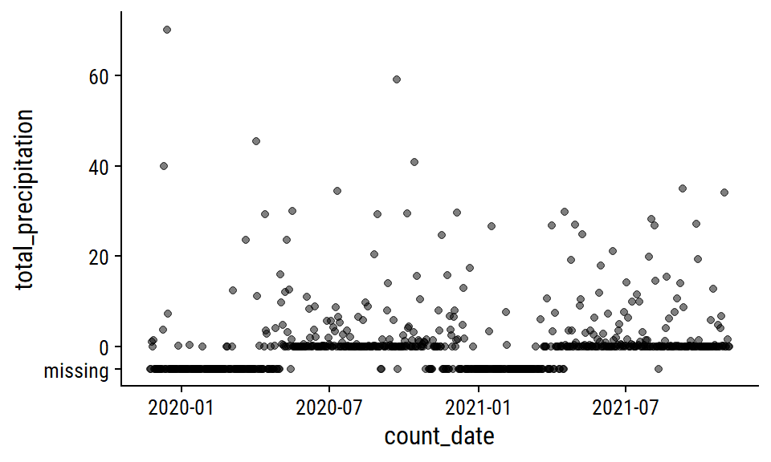
This pattern of missing data during winter months makes me think that the total_precipitation is actually total rainfall, i.e. snowfall is not counted. I’m going to impute the missing values with 0 during pre-processing, which is admittedly a poor approximation of the truth.
The snow_on_ground distribution:
p2 <- weather_data %>%
mutate(snow_on_ground = replace_na(snow_on_ground, -2)) %>%
ggplot(aes(x = count_date, y = snow_on_ground)) +
geom_point(alpha = 0.5) +
scale_y_continuous(breaks = c(-2, 0, 10, 20),
labels = c("missing", 0, 10, 20))
p2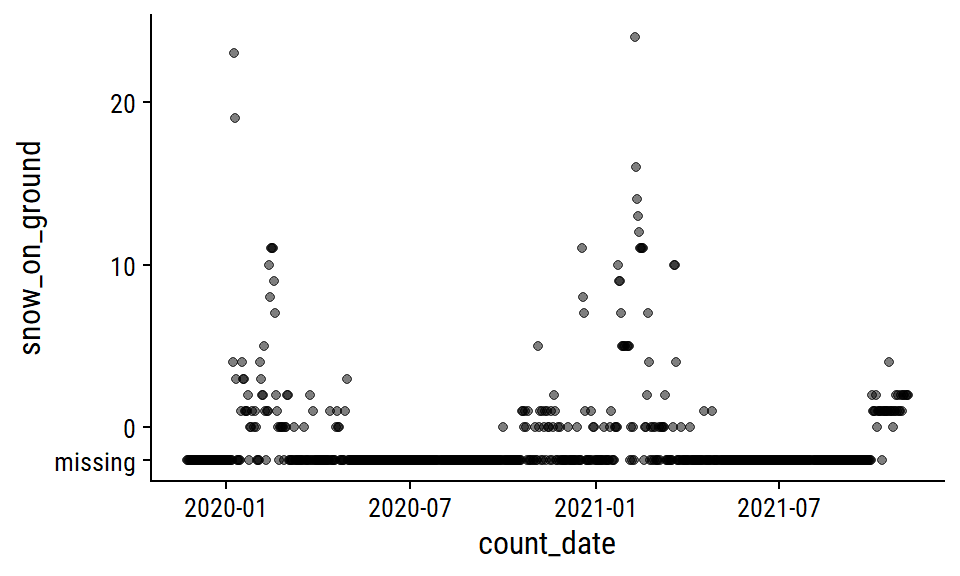
I’ll also impute zero for missing snow_on_ground, which I’m a lot more confident doing here because most of the missing values occur during non-winter months. A more careful approach might involve imputing 0 during non-winter months that I’m certain would have no snow on the ground, then modeling the winter months with something like a zero-inflated Poisson model.
The speed_max_gust variable is the daily maximum wind speed in km/h, and has 41% missing values.
mean_speed <- mean(weather_data$speed_max_gust, na.rm = TRUE)
weather_data %>%
mutate(
speed_max_gust = replace_na(speed_max_gust, 20)
) %>%
ggplot(aes(x = count_date, y = speed_max_gust)) +
geom_line(data = . %>% filter(speed_max_gust > 20)) +
geom_smooth(data = . %>% filter(speed_max_gust > 20),
method = "loess", formula = "y ~ x",
color = td_colors$nice$spanish_blue) +
geom_hline(yintercept = mean_speed,
color = td_colors$nice$opera_mauve, size = 1, lty = 2) +
geom_jitter(data = . %>% filter(speed_max_gust == 20),
width = 0, alpha = 0.5) +
scale_y_continuous(breaks = c(mean_speed, 20, 40, 60, 80),
labels = c("mean_speed", "missing", 40, 60, 80))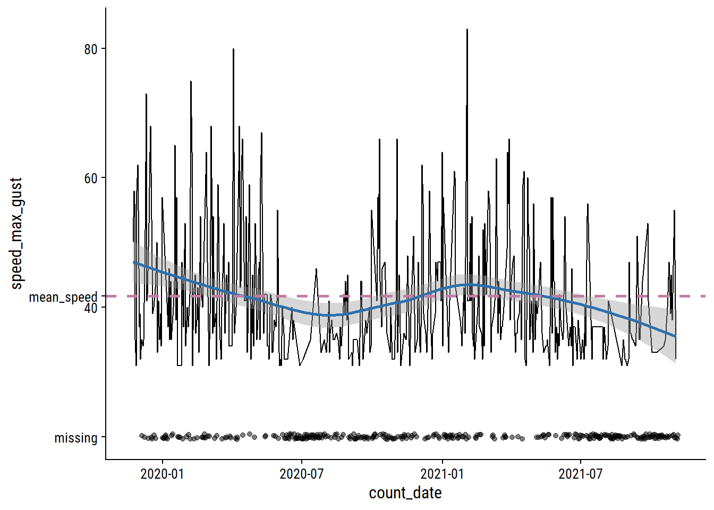
Relative to the noise, the time trends are pretty minor, and the missing data looks to be missing mostly at random. I’ll just impute using the mean speed.
As a time series data set, it would be careless to not account for past data when predicting future data, so I’ll include lagged n_bikes values. Investigate the correlation in n_bikes for values lagged by 1, 2 and 3 days, and by 1 and 2 weeks (because they are the same day of the week):
bike_train_lag <- bike_train %>%
arrange(site_name, count_date) %>%
group_by(site_name) %>%
mutate(
n_bikes_lag_1 = lag(n_bikes, 1),
n_bikes_lag_2 = lag(n_bikes, 2),
n_bikes_lag_3 = lag(n_bikes, 3),
n_bikes_lag_7 = lag(n_bikes, 7),
n_bikes_lag_14 = lag(n_bikes, 14)
)
bike_train_lag %>%
select(site_name, count_date, starts_with("n_bikes")) %>%
pivot_longer(cols = matches("n_bikes_lag"),
names_to = "lag_days", values_to = "n_bikes_lag") %>%
filter(!is.na(n_bikes_lag)) %>%
mutate(lag_days = str_extract(lag_days, "\\d+") %>% as.integer()) %>%
group_by(site_name, lag_days) %>%
mutate(corr_coef = cor(n_bikes, n_bikes_lag)) %>%
ggplot(aes(x = n_bikes_lag, y = n_bikes, color = site_name)) +
geom_point(alpha = 0.2) +
geom_label(data = . %>% distinct(n_bikes_lag, site_name, corr_coef),
aes(label = round(corr_coef, 2), x = 500, y = 200)) +
geom_abline(slope = 1) +
facet_grid(str_trunc(site_name, 8) ~ factor(lag_days)) +
dunnr::add_facet_borders() +
theme(legend.position = "none")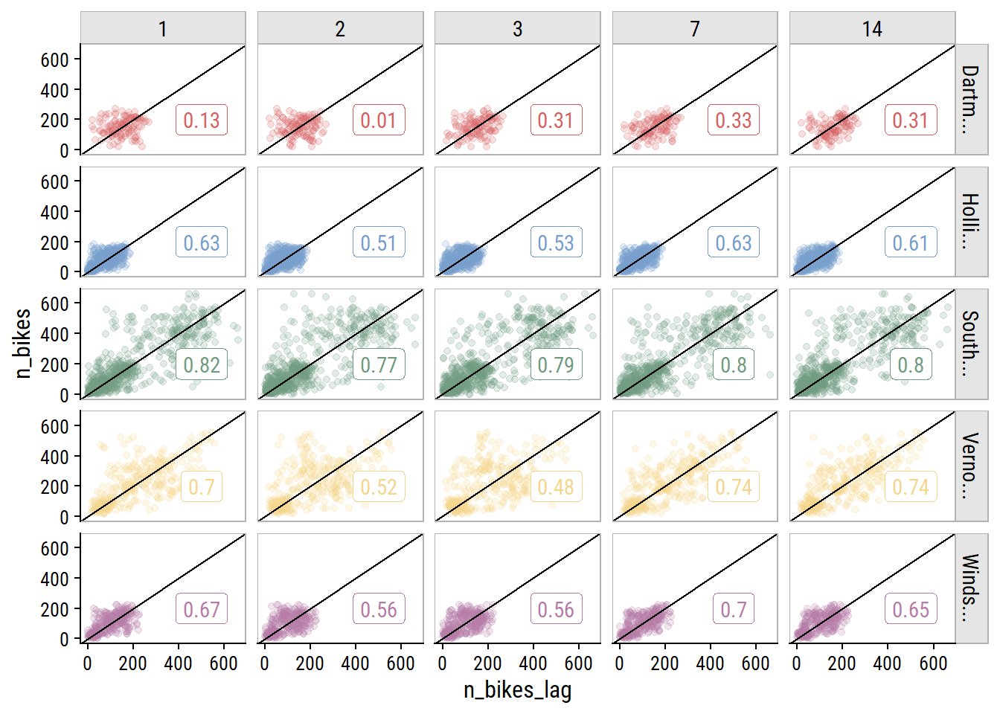
The 7- and 14-day lagged values are correlated just as strongly (in some cases stronger) than the other options. This is great news because I only want to include a single lag variable, and using the 14th day lag means I can forecast 14 days ahead.
In order to use 14-day lag in a tidymodels workflow, I need to add it to the data myself. The step_lag() function won’t allow the outcome n_bikes to be lagged, because any new data won’t have an n_bikes variable to use. See the warning in this section of the Tidy Modeling with R book. Add the n_bikes_lag_14 predictor, and exclude any values without it:
While I’m at it, I’ll impute the missing mean_temperature values with the seasonal GAM.
bike_ridership <- bike_ridership %>%
mutate(
count_day = as.numeric(count_date - min(count_date)),
count_yday = lubridate::yday(count_date),
) %>%
bind_cols(pred = predict(gam_temperature, newdata = .)) %>%
mutate(
mean_temperature = ifelse(is.na(mean_temperature), pred,
mean_temperature)
) %>%
select(-count_day, -count_yday, -pred)This means I’ll have to re-split the data into training and testing (initial_time_split() isn’t random, so doesn’t require setting the seed):
Register parallel computing:
n_cores <- parallel::detectCores(logical = FALSE)
library(doParallel)
cl <- makePSOCKcluster(n_cores - 1)
registerDoParallel(cl)
# This extra step makes sure the parallel workers have access to the
# `tidyr::replace_na()` function during pre-processing, which I use later on
# See this issue: https://github.com/tidymodels/tune/issues/364
parallel::clusterExport(cl, c("replace_na"))For re-sampling, I will use sliding_period() to break up the data into 14 months of data (chosen to give 10 resamples) for analysis and 1 month for assessment:
Visualize the resamples:
bind_rows(
analysis_set = map_dfr(bike_resamples$splits, analysis, .id = "i"),
assessment_set = map_dfr(bike_resamples$splits, assessment, .id = "i"),
.id = "data_set"
) %>%
mutate(i = as.integer(i)) %>%
group_by(i, data_set) %>%
summarise(
min_date = min(count_date), max_date = max(count_date),
n_days = n(), midpoint_date = min_date + n_days / 2,
.groups = "drop"
) %>%
ggplot(aes(y = factor(i), color = data_set)) +
geom_linerange(aes(xmin = min_date, xmax = max_date),
position = position_dodge(0.3)) +
geom_point(aes(x = min_date), position = position_dodge(0.3)) +
geom_point(aes(x = max_date), position = position_dodge(0.3)) +
labs(x = "date range", y = NULL, color = NULL)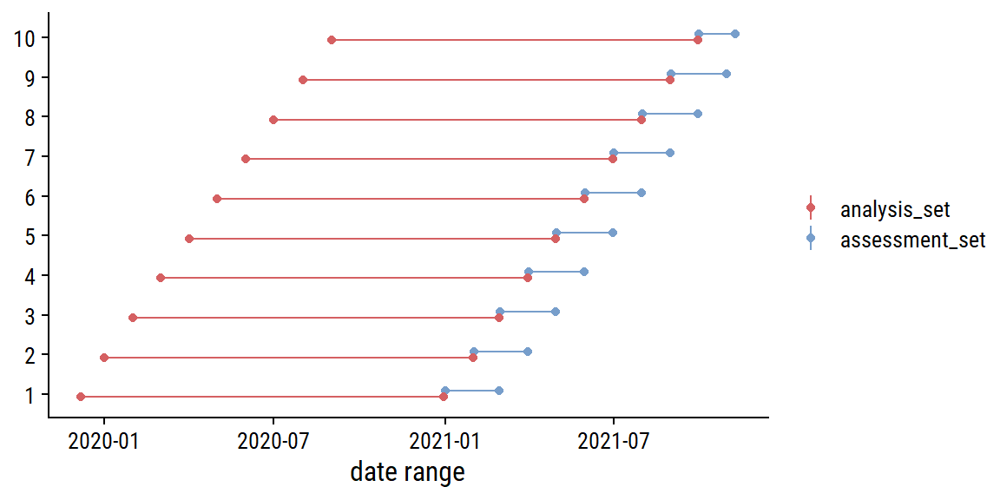
I’ll define a set of metrics to use here as well:
The Poisson log loss is a new one to me, that was recently added to yardstick. I’ll include it just for kicks, but I will choose my final model with mase, the mean absolute scaled error, which was introduced by Hyndman and Koehler (Hyndman and Koehler 2006). The MASE involves dividing the absolute forecast error (\(|y_i - \hat{y}_i|\)) by absolute naive forecast error (which involves predicting with the last observed value). The main advantage of this is that it is scale invariant. Mean absolute percentage error (MAPE) is the typical scale-invariant choice in regression problems, but the MASE avoids dividing by n_bikes = 0 (of which there are about 20 in this data set). It also has a straightforward interpretation: values greater than one indicate a worse forecast than the naive method, and values less indicate better.
The first models I will try are simple linear regression and Poisson regression, but I will test out a few different pre-processing/feature combinations. I would prefer to use negative binomial regression instead of Poisson to account for overdispersion (see aside), but it hasn’t been implemented in parsnip yet.
Over-dispersion in n_bikes (variance much higher than the mean):
bike_train %>%
group_by(site_name) %>%
summarise(mean_n_bikes = mean(n_bikes), var_n_bikes = var(n_bikes))# A tibble: 5 × 3
site_name mean_n_bikes var_n_bikes
<chr> <dbl> <dbl>
1 Dartmouth Harbourfront Greenway 145. 3121.
2 Hollis St 77.0 2180.
3 South Park St 174. 26594.
4 Vernon St 212. 18080.
5 Windsor St 96.3 3413.For my base pre-processing, I’ll include just site_name and n_bikes_lag_14:
The first extension of this recipe will include date variables. I’ll add day of week as categorical, day of year as numerical (and tune a natural spline function), year as numerical and Canadian holidays as categorical.
glm_recipe_date <-
recipe(n_bikes ~ count_date + site_name + n_bikes_lag_14,
data = bike_train) %>%
add_role(count_date, new_role = "date_variable") %>%
step_date(count_date, features = c("dow", "doy", "year"),
label = TRUE, ordinal = FALSE) %>%
step_ns(count_date_doy, deg_free = tune()) %>%
step_holiday(count_date, holidays = canada_holidays) %>%
step_novel(all_nominal_predictors()) %>%
step_dummy(all_nominal_predictors()) %>%
step_zv(all_predictors())I’ll consider the weather variables, with the imputations discussed in the feature engineering section, separately:
glm_recipe_weather <-
recipe(n_bikes ~ count_date + site_name + n_bikes_lag_14 + mean_temperature +
total_precipitation + speed_max_gust + snow_on_ground,
data = bike_train) %>%
add_role(count_date, new_role = "date_variable") %>%
step_impute_mean(speed_max_gust) %>%
# Impute these missing values with zero
step_mutate_at(c(total_precipitation, snow_on_ground),
fn = ~ replace_na(., 0)) %>%
step_novel(all_nominal_predictors()) %>%
step_dummy(all_nominal_predictors()) %>%
step_zv(all_predictors())And lastly, all the features together:
glm_recipe_date_weather <-
recipe(n_bikes ~ count_date + site_name + n_bikes_lag_14 + mean_temperature +
total_precipitation + speed_max_gust + snow_on_ground,
data = bike_train) %>%
add_role(count_date, new_role = "date_variable") %>%
step_date(count_date, features = c("dow", "doy", "year"),
label = TRUE, ordinal = FALSE) %>%
step_ns(count_date_doy, deg_free = tune()) %>%
step_holiday(count_date, holidays = canada_holidays) %>%
step_impute_mean(speed_max_gust) %>%
step_mutate_at(c(total_precipitation, snow_on_ground),
fn = ~ replace_na(., 0)) %>%
step_novel(all_nominal_predictors()) %>%
step_dummy(all_nominal_predictors()) %>%
step_zv(all_predictors())Put these pre-processing recipes and the model specifications into a workflow_set():
Now fit the resamples using each combination of model specification and pre-processing recipe:
tic()
glm_wf_set_res <- workflow_map(
glm_wf_set,
"tune_grid",
# I'll try just a few `deg_free` in the spline term
grid = grid_regular(deg_free(range = c(4, 7)), levels = 4),
resamples = bike_resamples, metrics = bike_metrics
)
toc()35.38 sec elapsedFor plotting the results this set of workflows, I’ll use a custom plotting function with rank_results():
plot_wf_set_metrics <- function(wf_set_res, rank_metric = "mase") {
rank_results(wf_set_res, rank_metric = rank_metric) %>%
mutate(preproc = str_remove(wflow_id, paste0("_", model))) %>%
ggplot(aes(x = rank, y = mean, color = model, shape = preproc)) +
geom_point(size = 2) +
geom_errorbar(aes(ymin = mean - std_err, ymax = mean + std_err),
width = 0.2) +
facet_wrap(~ .metric, scales = "free_y")
}
plot_wf_set_metrics(glm_wf_set_res)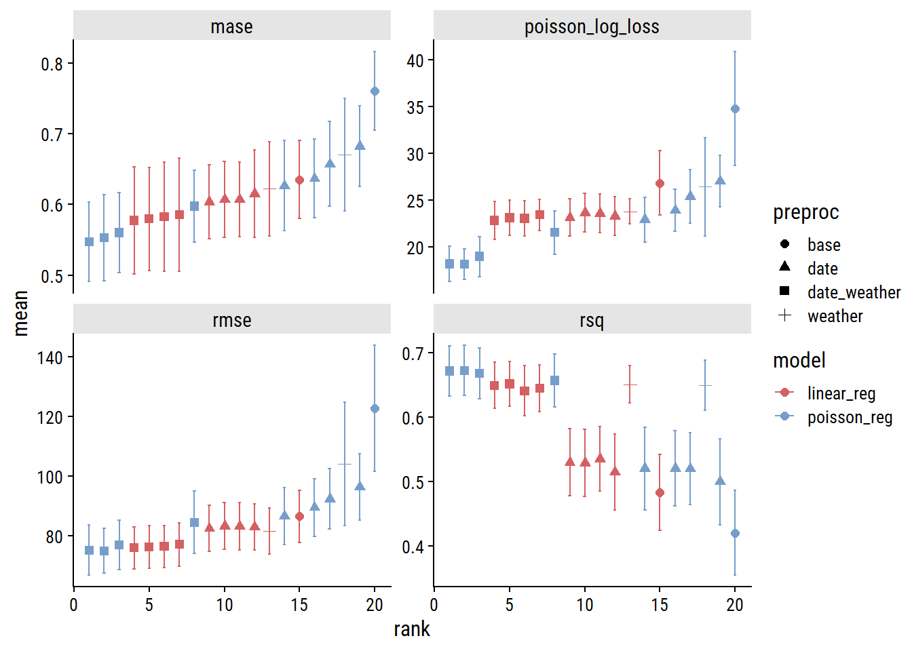
I’m using my own function because the workflowsets::autoplot() function doesn’t distinguish preprocessor recipes using the names provided to the preproc argument – everything just gets the name “recipe”:
# A tibble: 8 × 3
wflow_id preprocessor model
<chr> <chr> <chr>
1 date_weather_poisson_reg recipe poisson_reg
2 date_weather_linear_reg recipe linear_reg
3 weather_linear_reg recipe linear_reg
4 date_linear_reg recipe linear_reg
5 base_linear_reg recipe linear_reg
6 date_poisson_reg recipe poisson_reg
7 weather_poisson_reg recipe poisson_reg
8 base_poisson_reg recipe poisson_regMy function extracts the recipe name from wflow_id.
Across the board, the model will all the features (date and weather predictors; indicated by the square symbols) are best, and Poisson regression slightly outperforms linear. Here are the models ranked by MASE:3
rank_results(glm_wf_set_res, select_best = TRUE, rank_metric = "mase") %>%
filter(.metric == "mase") %>%
select(rank, wflow_id, .config, mase = mean, std_err) %>%
gt() %>%
fmt_number(columns = c(mase, std_err), decimals = 3)| rank | wflow_id | .config | mase | std_err |
|---|---|---|---|---|
| 1 | date_weather_poisson_reg | Preprocessor3_Model1 | 0.547 | 0.056 |
| 2 | date_weather_linear_reg | Preprocessor3_Model1 | 0.577 | 0.075 |
| 3 | date_linear_reg | Preprocessor2_Model1 | 0.604 | 0.052 |
| 4 | weather_linear_reg | Preprocessor1_Model1 | 0.622 | 0.067 |
| 5 | date_poisson_reg | Preprocessor2_Model1 | 0.626 | 0.064 |
| 6 | base_linear_reg | Preprocessor1_Model1 | 0.635 | 0.055 |
| 7 | weather_poisson_reg | Preprocessor1_Model1 | 0.670 | 0.080 |
| 8 | base_poisson_reg | Preprocessor1_Model1 | 0.760 | 0.055 |
So our best workflow has the id date_weather_poisson_reg4 with the .config “Preprocessor3_Model1” which refers to a specific spline degree from our tuning of the count_date_doy feature. I can check out the results of the tuning with autoplot():
autoplot(glm_wf_set_res, id = "date_weather_poisson_reg") +
facet_wrap(~ .metric, nrow = 2, scales = "free_y")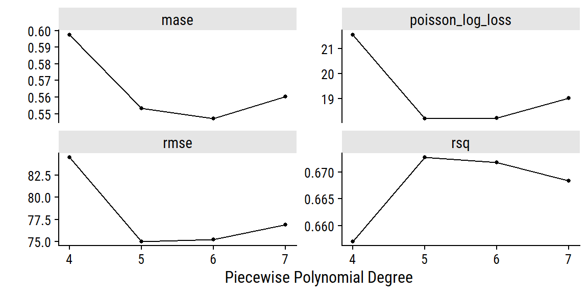
The polynomial of degree 6 did best by MASE, which I’ll use to finalize the workflow and fit to the full training set:
An advantage of using a generalized linear model is that they are easy to interpret. A simple way to estimate variable important in a GLM is to look at the absolute value of the \(t\)-statistic (statistic in the below table) – here are the top 5:
poisson_coefs <- tidy(glm_poisson_fit) %>%
arrange(desc(abs(statistic))) %>%
mutate(estimate = signif(estimate, 3), std.error = signif(estimate, 2),
statistic = round(statistic, 1), p.value = scales::pvalue(p.value))
head(poisson_coefs, 5) %>%
gt()| term | estimate | std.error | statistic | p.value |
|---|---|---|---|---|
| total_precipitation | -0.0384 | -0.038 | -84.6 | <0.001 |
| site_name_South.Park.St | 0.6890 | 0.690 | 68.6 | <0.001 |
| site_name_Vernon.St | 0.5490 | 0.550 | 57.8 | <0.001 |
| mean_temperature | 0.0365 | 0.036 | 53.3 | <0.001 |
| n_bikes_lag_14 | 0.0010 | 0.001 | 48.2 | <0.001 |
A couple of the weather variables are among the most influential in predicting n_bikes. Here are all the weather coefficients:
| term | estimate | std.error | statistic | p.value |
|---|---|---|---|---|
| total_precipitation | -0.03840 | -0.0380 | -84.6 | <0.001 |
| mean_temperature | 0.03650 | 0.0360 | 53.3 | <0.001 |
| snow_on_ground | -0.05360 | -0.0540 | -28.9 | <0.001 |
| speed_max_gust | -0.00735 | -0.0074 | -19.6 | <0.001 |
Since this is a Poisson model, the link function (non-linear relationship between the outcome and the predictors) is the logarithm:
\[ \begin{align} \log{n}_{\text{bikes}} &= \beta_0 + \beta_1 x_1 + \dots + \beta_p x_p \\ n_{\text{bikes}} &= \text{exp}(\beta_0 + \beta_1 x_1 + \dots + \beta_p x_p) \\ &= \text{exp}(\beta_0) \text{exp}(\beta_1 x_1) \dots \text{exp}(\beta_p x_p) \\ \end{align} \]
So the coefficients are interpreted as: for every one unit increase in \(x_i\), the expected value of \(n_{\text{bikes}}\) changes by multiplicative factor of \(\text{exp}(\beta_i)\), holding all other predictors constant. Here are some plain-language interpretations of the weather coefficients:
mean_temperature), the expected value of n_bikes increases by 120%.total_precipitation), the expected value of n_bikes decreases by 68%.speed_max_gust), the expected value of n_bikes decreases by 93%.snow_on_ground), the expected value of n_bikes decreases by 77%.A more thorough and formal analysis of these types of relationships should involve exploration of marginal effects (with a package like marginaleffects for example), but I’ll move on to other models.
For tree-based methods, I’ll use similar pre-processing as with GLM, except I won’t use a spline term (trees partition the feature space to capture non-linearity):
trees_recipe <-
recipe(n_bikes ~ count_date + site_name + n_bikes_lag_14 + mean_temperature +
total_precipitation + speed_max_gust + snow_on_ground,
data = bike_train) %>%
update_role(count_date, new_role = "date_variable") %>%
step_date(count_date, features = c("dow", "doy", "year"),
label = TRUE, ordinal = FALSE) %>%
step_holiday(count_date, holidays = canada_holidays) %>%
step_novel(all_nominal_predictors()) %>%
step_impute_mean(speed_max_gust) %>%
step_mutate_at(c(total_precipitation, snow_on_ground),
fn = ~ replace_na(., 0)) %>%
step_zv(all_predictors())
# XGBoost requires dummy variables
trees_recipe_dummy <- trees_recipe %>%
step_dummy(all_nominal_predictors())I’ll try a decision tree, a random forest, and an XGBoost model, each with hyperparameters indicated for tuning:
decision_spec <-
decision_tree(cost_complexity = tune(), tree_depth = tune(),
min_n = tune()) %>%
set_engine("rpart") %>%
set_mode("regression")
rf_spec <- rand_forest(mtry = tune(), min_n = tune(), trees = 1000) %>%
# Setting the `importance` parameter now lets me use `vip` later
set_engine("ranger", importance = "permutation") %>%
set_mode("regression")
xgb_spec <- boost_tree(
mtry = tune(), trees = tune(), min_n = tune(),
tree_depth = tune(), learn_rate = tune()
) %>%
set_engine("xgboost") %>%
set_mode("regression")
trees_wf_set <- workflow_set(
preproc = list(trees_recipe = trees_recipe,
trees_recipe = trees_recipe,
trees_recipe_dummy = trees_recipe_dummy),
models = list(rf = rf_spec, decision = decision_spec, xgb = xgb_spec),
cross = FALSE
)As a first pass, I’ll let tune_grid() choose 10 parameter combinations automatically for each model (grid = 10):
set.seed(225)
tic()
trees_wf_set_res <- workflow_map(
trees_wf_set,
"tune_grid",
grid = 10, resamples = bike_resamples, metrics = bike_metrics,
)
toc()98.83 sec elapsedVisualize the performance of the 30 workflows, ranked by MASE:
# Don't need to use my custom function defined previously because I'm
# not using functionally different recipes for each model
autoplot(trees_wf_set_res, rank_metric = "mase")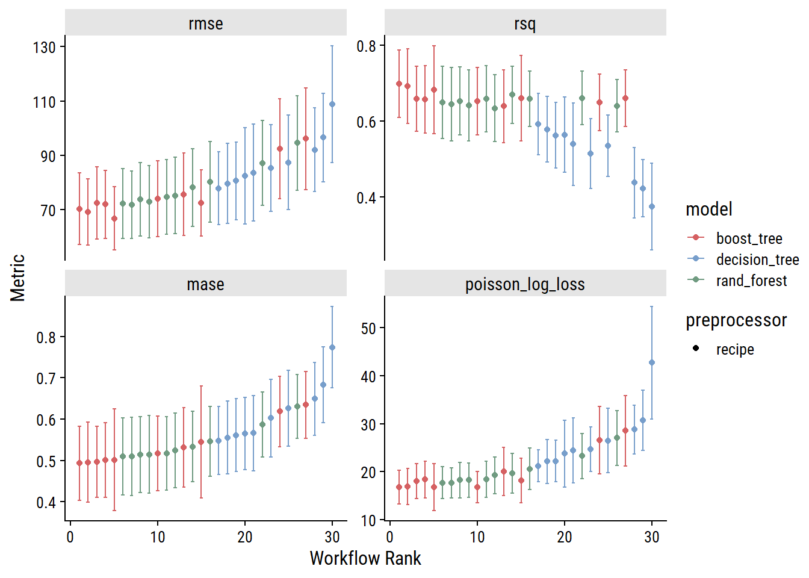
As I would have expected, the decision tree models generally perform worse than random forest models (which consist of multiple decision trees). The boosted tree models (which also consist of multiple decision trees, but differ in how they are built and combined) slightly outperform random forests, which is also expected.
For the three different tree-based model types, I’ll extract the best-performing workflows (by MASE) and fit to the full training set:
decision_workflow <- finalize_workflow(
extract_workflow(trees_wf_set_res, "trees_recipe_decision"),
extract_workflow_set_result(trees_wf_set_res, "trees_recipe_decision") %>%
select_best(metric = "mase")
)
rf_workflow <- finalize_workflow(
extract_workflow(trees_wf_set_res, "trees_recipe_rf"),
extract_workflow_set_result(trees_wf_set_res, "trees_recipe_rf") %>%
select_best(metric = "mase")
)
xgb_workflow <- finalize_workflow(
extract_workflow(trees_wf_set_res, "trees_recipe_dummy_xgb"),
extract_workflow_set_result(trees_wf_set_res, "trees_recipe_dummy_xgb") %>%
select_best(metric = "mase")
)
decision_fit <- decision_workflow %>% fit(bike_train)
rf_fit <- rf_workflow %>% fit(bike_train)
xgb_fit <- xgb_workflow %>% fit(bike_train)Decision trees are the easiest of the three to interpret, but this decision tree is quite complicated. It has 44 leaf nodes (i.e. terminal nodes) with a depth of 6. The visualization (done with the rpart.plot package) is messy and hidden below:
The nodes at the top of the tree are a good indicator of feature importance. Here, that was n_bikes_lag_14, followed by mean_temperature and total_precipitation.
To quantify the contribution of each feature in a tree-based model, we can calculate variable importance with the vip package. Plot the top 5 variables for all 3 models:
library(vip)
p1 <- extract_fit_engine(decision_fit) %>%
vip(num_features = 5) +
scale_y_continuous(NULL, expand = c(0, 0)) +
labs(subtitle = "Decision tree")
p2 <- extract_fit_engine(rf_fit) %>%
vip(num_features = 5) +
scale_y_continuous(NULL, expand = c(0, 0)) +
labs(subtitle = "Random forest")
p3 <- extract_fit_engine(xgb_fit) %>%
vip(num_features = 5) +
scale_y_continuous(NULL, expand = c(0, 0)) +
labs(subtitle = "XGBoost")
p1 + p2 + p3 +
plot_layout(ncol = 1)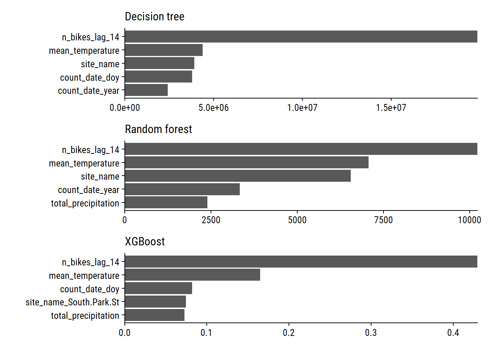
We see that n_bikes_lag_14, mean_temperature, and site_name are important with all three models. Measures of time within (count_date_doy) and across (count_date_year) years are also important.
So far, I’ve only considered 10 candidate sets of hyperparameters for tuning each tree-based model. Let’s try 100 with XGBoost:
# Get the number of predictors so I can set max number of predictors in `mtry()`
bike_train_baked <- prep(trees_recipe_dummy) %>% bake(bike_train)
# `grid_latin_hypercube()` is a space-filling parameter grid design that will
# efficiently cover the parameter space for me
xgb_grid <- grid_latin_hypercube(
finalize(mtry(), select(bike_train_baked, -n_bikes)),
trees(), min_n(), tree_depth(), learn_rate(),
size = 100
)
xgb_grid# A tibble: 100 × 5
mtry trees min_n tree_depth learn_rate
<int> <int> <int> <int> <dbl>
1 14 300 20 8 4.27e- 4
2 30 1560 5 12 2.17e- 5
3 22 1723 30 2 1.37e- 2
4 2 268 21 2 6.42e-10
5 7 780 15 12 1.09e- 5
6 24 642 24 2 7.51e- 5
7 3 1066 36 3 8.06e- 9
8 13 725 4 6 1.94e- 2
9 18 574 40 9 5.55e- 7
10 27 1988 38 13 7.08e- 9
# … with 90 more rows
# ℹ Use `print(n = ...)` to see more rowsWe have just one model and one preprocessor now, so put it into a single workflow:
And tune:
set.seed(2081)
tic()
xgb_tune <- tune_grid(
xgb_workflow_2, resamples = bike_resamples,
grid = xgb_grid, metrics = bike_metrics
)
toc()475.8 sec elapsedHere are the metrics for the different candidate models:
Finalize the workflow with the best hyperparameters and fit the full training set:
Lastly, I will try some support vector machine regressions with linear, polynomial and radial basis function (RBF) kernels:
# New recipe for the SVMs which require a `step_normalize()`
svm_recipe <-
recipe(
n_bikes ~ count_date + site_name + n_bikes_lag_14 + mean_temperature +
total_precipitation + speed_max_gust + snow_on_ground,
data = bike_train,
) %>%
update_role(count_date, new_role = "date_variable") %>%
step_date(count_date, features = c("dow", "doy", "year"),
label = TRUE, ordinal = FALSE) %>%
step_holiday(count_date, holidays = canada_holidays) %>%
step_novel(all_nominal_predictors()) %>%
step_impute_mean(speed_max_gust) %>%
step_mutate_at(c(total_precipitation, snow_on_ground),
fn = ~ replace_na(., 0)) %>%
step_zv(all_predictors()) %>%
step_normalize(all_numeric_predictors())
svm_linear_spec <- svm_linear(cost = tune(), margin = tune()) %>%
set_mode("regression") %>%
set_engine("kernlab")
svm_poly_spec <- svm_poly(cost = tune(), margin = tune(),
scale_factor = tune(), degree = tune()) %>%
set_mode("regression") %>%
set_engine("kernlab")
svm_rbf_spec <- svm_rbf(cost = tune(), rbf_sigma = tune()) %>%
set_mode("regression") %>%
set_engine("kernlab")
svm_wf_set <- workflow_set(
preproc = list(svm_recipe),
models = list(linear = svm_linear_spec, poly = svm_poly_spec,
rbf = svm_rbf_spec)
)Those are some pretty interesting (and smooth) trends. The best model is one of the svm_rbf candidates (though the next 10 are the svm_linear models). Finalize the workflows and fit:
svm_linear_wf_res <-
extract_workflow_set_result(svm_wf_set_res, "recipe_linear")
svm_linear_wf <-
finalize_workflow(
extract_workflow(svm_wf_set, "recipe_linear"),
select_best(svm_linear_wf_res, "mase")
)
svm_linear_fit <- fit(svm_linear_wf, bike_train)
svm_poly_wf_res <-
extract_workflow_set_result(svm_wf_set_res, "recipe_poly")
svm_poly_wf <-
finalize_workflow(
extract_workflow(svm_wf_set, "recipe_poly"),
select_best(svm_poly_wf_res, "mase")
)
svm_poly_fit <- fit(svm_poly_wf, bike_train)
svm_rbf_wf_res <-
extract_workflow_set_result(svm_wf_set_res, "recipe_rbf")
svm_rbf_wf <-
finalize_workflow(
extract_workflow(svm_wf_set, "recipe_rbf"),
select_best(svm_rbf_wf_res, "mase")
)
svm_rbf_fit <- fit(svm_rbf_wf, bike_train)I’ll choose a model by the best cross-validated MASE:
bind_rows(
rank_results(glm_wf_set_res, rank_metric = "mase",
select_best = TRUE) %>%
# Only include the full pre-processing recipe
filter(str_detect(wflow_id, "date_weather")),
rank_results(trees_wf_set_res, rank_metric = "mase", select_best = TRUE),
rank_results(svm_wf_set_res, rank_metric = "mase", select_best = TRUE),
show_best(xgb_tune, metric = "mase", n = 1) %>%
mutate(model = "boost_tree_2")
) %>%
filter(.metric == "mase") %>%
select(model, mase = mean, std_err) %>%
arrange(mase) %>%
gt() %>%
fmt_number(c(mase, std_err), decimals = 4)| model | mase | std_err |
|---|---|---|
| boost_tree_2 | 0.4913 | 0.0503 |
| boost_tree | 0.4933 | 0.0545 |
| rand_forest | 0.5099 | 0.0566 |
| svm_rbf | 0.5420 | 0.0440 |
| poisson_reg | 0.5471 | 0.0563 |
| decision_tree | 0.5481 | 0.0500 |
| svm_linear | 0.5608 | 0.0478 |
| linear_reg | 0.5775 | 0.0754 |
| svm_poly | 0.6253 | 0.0410 |
XGBoost takes the top two spots, with boost_tree_2 (the more thorough tuning) being the slight winner. Perform a last_fit() and get the performance on the held-out test set:
xgb_final_fit <- last_fit(
xgb_workflow_2, split = bike_split, metrics = bike_metrics
)
collect_metrics(xgb_final_fit) %>%
gt()| .metric | .estimator | .estimate | .config |
|---|---|---|---|
| rmse | standard | 44.2385659 | Preprocessor1_Model1 |
| rsq | standard | 0.5415386 | Preprocessor1_Model1 |
| mase | standard | 0.7406183 | Preprocessor1_Model1 |
| poisson_log_loss | standard | NaN | Preprocessor1_Model1 |
There’s a bit of a drop-off in performance from the training metrics. Let’s dig into the predictions.
Plot the relationship between actual n_bikes and predicted:
xgb_final_preds <- bind_rows(
train = augment(extract_workflow(xgb_final_fit), bike_train),
test = augment(extract_workflow(xgb_final_fit), bike_test),
.id = "data_set"
) %>%
mutate(data_set = fct_inorder(data_set))
xgb_final_preds %>%
ggplot(aes(x = n_bikes, y = .pred)) +
geom_point() +
geom_abline(slope = 1, size = 1, color = td_colors$nice$emerald) +
facet_wrap(~ data_set)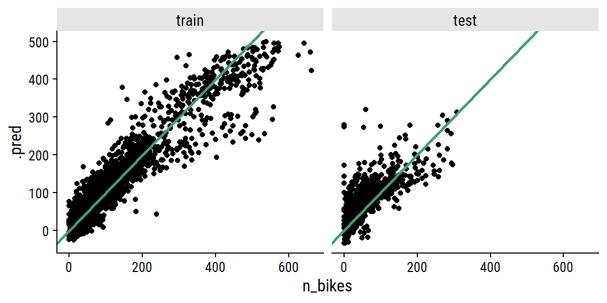
And here are the predictions overlaid on the data (vertical line delineates training and testing sets):
p <- xgb_final_preds %>%
ggplot(aes(x = count_date)) +
geom_line(aes(y = n_bikes, color = site_name), size = 1) +
geom_line(aes(y = .pred), color = "black") +
geom_vline(xintercept = min(bike_test$count_date), lty = 2) +
facet_wrap(~ site_name, ncol = 1, scales = "free_y") +
theme(legend.position = "none") +
scale_y_continuous(breaks = seq(0, 600, 200)) +
expand_limits(y = 200) +
dunnr::add_facet_borders()
p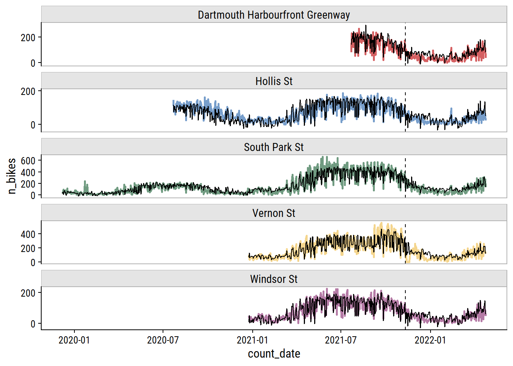
Truncate the dates to look closer at the testing set performance:
This looks okay to my eye, though it does look to be overfitting the training set. It’s a shame to not have more data to test a full year – most of the test set covers winter and spring.5
To investigate the model performance further, I’ll plot the biggest outliers in the training and testing set (and ±1 week on either side):
worst_preds <- xgb_final_preds %>%
mutate(abs_error = abs(n_bikes - .pred)) %>%
group_by(data_set, site_name) %>%
slice_max(abs_error, n = 1) %>%
ungroup() %>%
select(data_set, site_name, count_date, n_bikes, .pred, abs_error)
site_colors <- setNames(td_colors$pastel6[1:5], unique(worst_preds$site_name))
worst_preds %>%
select(data_set, site_name, count_date) %>%
mutate(
worst_date = count_date,
count_date = map(count_date, ~ seq.Date(.x - 7, .x + 7, by = "day"))
) %>%
unnest(count_date) %>%
left_join(xgb_final_preds,
by = c("data_set", "site_name", "count_date")) %>%
filter(!is.na(n_bikes)) %>%
mutate(site_name = fct_inorder(site_name)) %>%
split(.$site_name) %>%
map(
~ ggplot(., aes(x = count_date)) +
geom_line(aes(y = n_bikes, color = site_name)) +
geom_line(aes(y = .pred), color = "black") +
geom_vline(aes(xintercept = worst_date), lty = 2) +
facet_wrap(~ data_set, scales = "free_x", ncol = 2) +
dunnr::add_facet_borders() +
scale_color_manual(values = site_colors) +
scale_x_date(breaks = unique(.$worst_date)) +
expand_limits(y = 0) +
theme(legend.position = "none") +
labs(x = NULL, y = NULL,
subtitle = .$site_name[[1]])
) %>%
reduce(`+`) +
plot_layout(ncol = 2)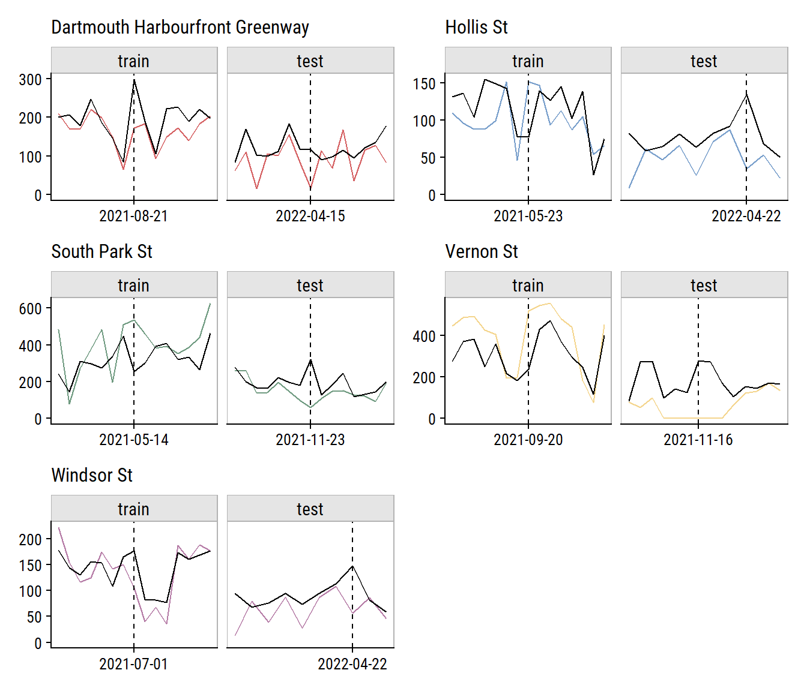
Relative to the noise in the data, that doesn’t look too bad. The Vernon St site has a series of n_bikes = 0 in a row that I’m guessing aren’t real (see aside). It was probably an issue with the counter, or maybe some construction on the street halting traffic for that period.
I also think some of the poor predictions can be explained by missing data. For instance, there are some poor predictions around 2021-11-23, where the model is over-estimating n_bikes at a few sites. Check out the weather around that day:
bike_ridership %>%
filter(count_date > "2021-11-20", count_date < "2021-11-26") %>%
distinct(count_date, mean_temperature, total_precipitation,
speed_max_gust, snow_on_ground) %>%
gt()| count_date | mean_temperature | total_precipitation | speed_max_gust | snow_on_ground |
|---|---|---|---|---|
| 2021-11-21 | 3.2 | NA | NA | 2 |
| 2021-11-22 | 11.1 | 42.2 | 57 | 2 |
| 2021-11-23 | 6.1 | NA | 41 | 1 |
| 2021-11-24 | 0.1 | NA | 43 | 1 |
| 2021-11-25 | 3.7 | NA | 43 | 1 |
This happens to be around the time of a huge rain and wind storm in Nova Scotia that knocked out power for a lot of people. This is seen in the total_precipitation on 2021-11-22, but the next day is missing data so, in my pre-processing, it was imputed as 0, which is definitely a poor approximation of the truth. If I impute a large amount of rain (let’s say 15mm) for that date, here is how the predictions change:
augment(
extract_workflow(xgb_final_fit),
xgb_final_preds %>%
filter(count_date == "2021-11-23") %>%
rename(.pred_old = .pred) %>%
mutate(total_precipitation = 15)
) %>%
select(site_name, n_bikes, .pred_old, .pred_new = .pred) %>%
gt()| site_name | n_bikes | .pred_old | .pred_new |
|---|---|---|---|
| Dartmouth Harbourfront Greenway | 30 | 122.19430 | 40.232090 |
| Hollis St | 19 | 79.22559 | 6.992786 |
| South Park St | 59 | 320.20889 | 165.825897 |
| Vernon St | 133 | 165.12285 | 77.777298 |
| Windsor St | 26 | 91.21191 | 12.152815 |
That is a much better prediction for a rainy and windy day.
In the end, the XGBoost model was able to best predict daily bike ridership.
Is this model useful to anyone? Maybe. Is it useful just sitting on my computer? Definitely not. So in my next post, I’ll put this model into production.
setting value
version R version 4.2.1 (2022-06-23 ucrt)
os Windows 10 x64 (build 19044)
system x86_64, mingw32
ui RTerm
language (EN)
collate English_Canada.utf8
ctype English_Canada.utf8
tz America/Curacao
date 2022-10-27
pandoc 2.18 @ C:/Program Files/RStudio/bin/quarto/bin/tools/ (via rmarkdown)Local: main C:/Users/tdunn/Documents/tdunn-quarto
Remote: main @ origin (https://github.com/taylordunn/tdunn-quarto.git)
Head: [4eb5bf2] 2022-10-26: Added font import to style sheetSince initial_time_split() doesn’t take strata argument, this would require defining a custom split function with rsample::make_splits(). This functionality might be available in future versions of rsample (see this issue).↩︎
Check out this blog post by Gavin Simpson for a great walkthrough of modeling seasonal data with GAMs.↩︎
Using the select_best = TRUE argument means only the best model in each workflow is returned. In this case, that means the workflows with the tunable spline feature of count_date_doy will only have one entry.↩︎
You could make the argument that the improvement is so minor that it is worth choosing the simpler linear regression model instead.↩︎
This is my reminder to myself to come back in fall 2022 to see how the model performs on a full summer season.↩︎
@online{dunn2022,
author = {Taylor Dunn},
title = {Predicting Bike Ridership: Developing a Model},
date = {2022-04-29},
url = {https://tdunn.ca/posts/2022-04-29-predicting-bike-ridership-developing-a-model},
langid = {en}
}